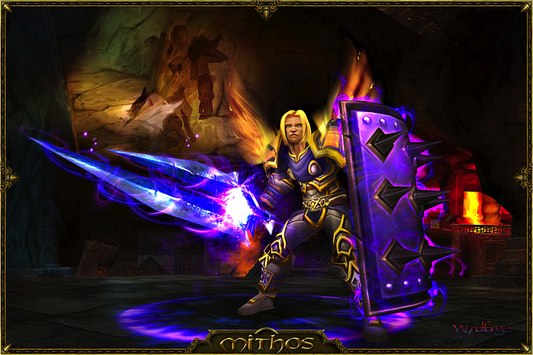

What if the odds are not in your favor?
Challenge
- 60+ Applications
- 1000s of pages
- 100s of videos
- 150+ developers
Today it is April 1, deadline for release is December 8

How do you power up 150+ developers, 150+ testers and 100s of people in other roles in 30 days?
Scope and Progress
Leverage
Plan B
Amaze
Accomplished
- 62 Applications Remediated in Source
- 5 Applications Remediated with Amaze
- 1000s of pages, hundreds of videos and documents
- Dozens of inspired developers
December 22nd (original traget was December 8)
Takeaways: Expertise
- 80% Easy, 20% difficult
- Embed Experts
- Central Steering Group
- Train and Do
Takeaways: Technology
- Tracking
- Automating
- Leverage
Takeaways: Testing
- AVT1 - FireEyes
- AVT2 - Manual testing
- AVT3 - AT testing
- Central Team